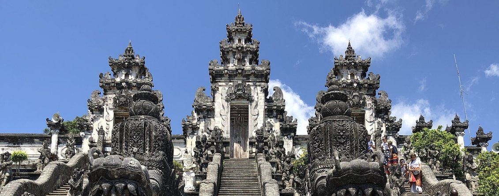
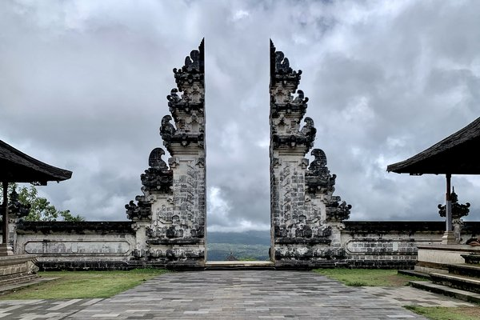
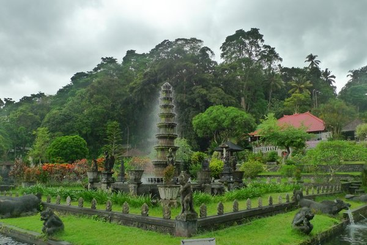
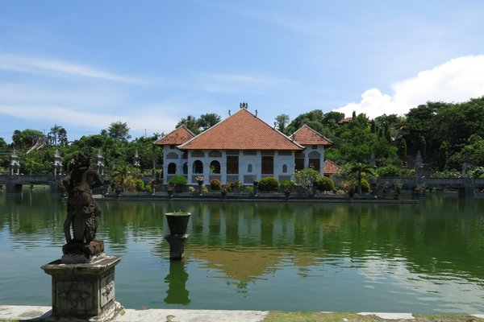
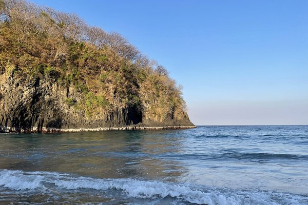
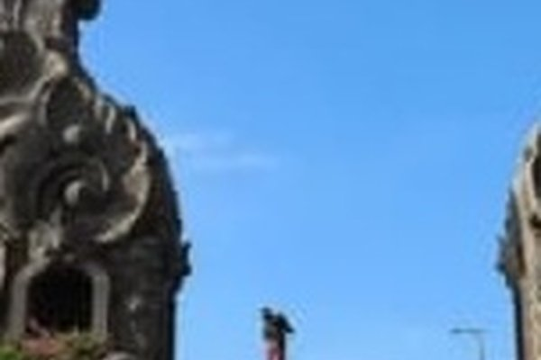
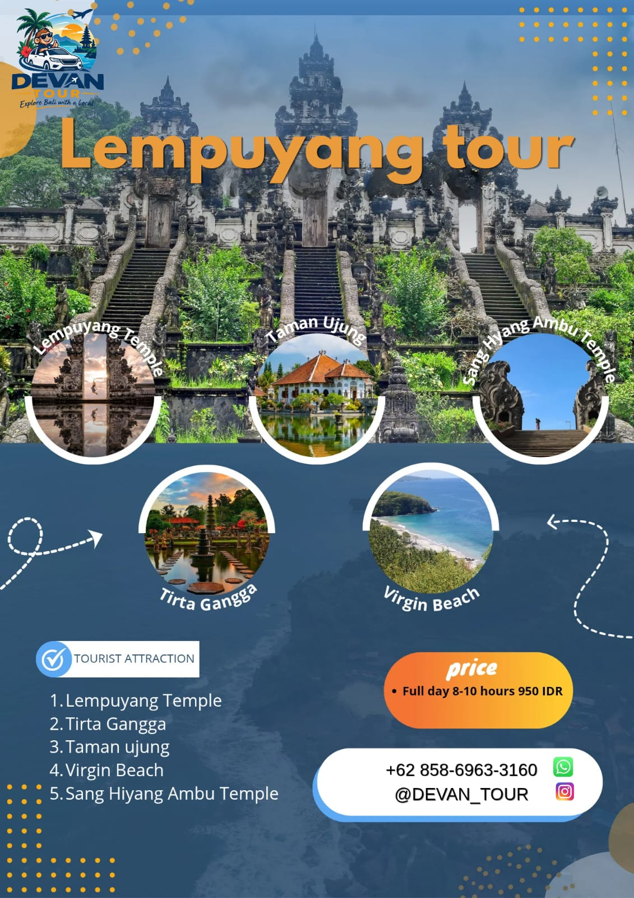
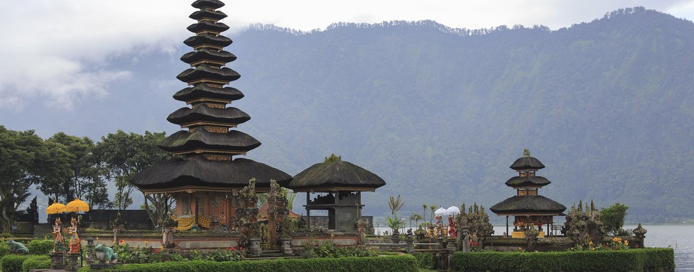

⏱ Full day (8–10 jam) / Half day
⏱ Full day (8–10 jam) / Half dayTur Kintamani
Penglipuran Village, Akasa resto, Sari Timbul, Ulu Petanu waterfall, dan Tirta Empul Temple.
Harga segera hadirDETAIL

⏱ Full day (8–10 jam)
Sehari menjelajahi Bali timur yang lebih tenang: gerbang candi bentar Pura Lempuyang dengan latar Gunung Agung — dikenal sebagai Gates of Heaven — lalu istana air Tirta Gangga, Taman Ujung di tepi pantai, pasir putih Virgin Beach, dan Gapura Sang Hyang Ambu di perbukitan Bugbug dengan panorama laut.

Pura Penataran Agung Lempuyang di lereng Gunung Lempuyang, Karangasem. Candi bentarnya membingkai Gunung Agung bila cuaca cerah, dan dikenal luas sebagai Gates of Heaven. Kenakan pakaian sopan serta kain (kamen) dan selendang di area pura.

Bekas istana air kerajaan Karangasem: kolam, air mancur berundak, batu loncatan, dan taman yang rimbun. Tempat yang nyaman untuk berjalan pelan dan berfoto di antara air dan ukiran batu.

Taman Sukasada Ujung, istana air di pesisir Karangasem dengan paviliun beratap merah di tepi kolam, jembatan, dan pemandangan hijau ke perbukitan.

Pantai Pasir Putih (Pantai Perasi) di Karangasem: teluk berpasir terang di pantai timur Bali, air yang jernih, dan suasana yang lebih tenang daripada pantai selatan yang ramai. Cocok untuk berenang dan bersantai.

Gapura ukir di Bukit Sang Hyang Ambu, Desa Bugbug, Karangasem. Dari sini Anda dapat memandang laut dan perbukitan sekitar — penutup hari yang tenang di Bali timur. Jaga barang bawaan jika ada monyet liar di kawasan ini.
Tujuan boleh request, dengan syarat destinasi yang diminta ada di daftar berikut: Lempuyang Temple (Gates of Heaven), Tirta Gangga, Taman Ujung (Ujung Water Palace), Virgin Beach (Pasir Putih, Karangasem), dan Sang Hyang Ambu Temple. Urutan dapat menyesuaikan kondisi lalu lintas dan cuaca.

Tur full day berlangsung 8–10 jam. Untuk half day, harga belum ditetapkan — silakan hubungi kami via WhatsApp.
Ya. Mobil ber-AC serta antar-jemput hotel sudah termasuk.
Tur full day Rp 1.000.000. Untuk half day, silakan hubungi kami via WhatsApp — harganya belum dipublikasikan.
Pesan via WhatsApp atau isi form booking di halaman ini. Kami konfirmasi tanggal dan detail lewat WhatsApp.
Tujuan boleh request, dengan syarat destinasi yang diminta ada di daftar berikut: Lempuyang Temple (Gates of Heaven), Tirta Gangga, Taman Ujung (Ujung Water Palace), Virgin Beach (Pasir Putih, Karangasem), dan Sang Hyang Ambu Temple.
⏱ Full day (8–10 jam) / Half dayPenglipuran Village, Akasa resto, Sari Timbul, Ulu Petanu waterfall, dan Tirta Empul Temple.
 ⏱ Full day (8–10 jam) / Half day
⏱ Full day (8–10 jam) / Half dayDolphin sunrise, Brahmavihara Arama, Banjar Hot Springs, Krisna watersport & souvenirs, dan Aling-Aling Waterfall — pantai utara Bali yang lebih tenang.

⏱ Full day (8–10 jam) / Half dayThe Bloom Garden, Ulun Danu Beratan Temple, Handara Gate, Bali Farm House, dan Wanagiri Hidden Hill — dataran tinggi Bedugul yang sejuk.